Đá là một trong những vật liệu được dùng nhiều trong thiết kế kiến trúc với tính ứng dụng cao, vừa mang đến sự chắc chắn, vừa mang đến nét thẩm mỹ cho ngôi nhà. Mỗi loại đá đều có những bí quyết riêng để tô điểm cho công trình. 15 loại đá dưới đây cũng là 15 cách biến hóa ngôi nhà trở nên sinh động hơn.

Đá vừa mang đến sự chắc chắn, vừa mang đến nét thẩm mỹ cho ngôi nhà
Alabaster

Sử dụng Alabaster cho nhà hàng
Alabaster là loại đá mềm, hạt mịn, đã được sử dụng trong nhiều thế kỷ để chạm khắc bề mặt và đồ trang trí tinh xảo. Tuy nhiên với khả năng hòa tan trong nước, alabaster thích hợp với những thiết kế trong nhà. Ở dạng tinh khiết, alabaster có màu trắng, mờ, là một trong những yếu tố lý tưởng để thiết kế chiếu sáng.
Studio Tack đã sử dụng bóng đèn hình ống làm từ thạch cao alabaster để chiếu sáng nhẹ nhàng cho nhà hàng Nhật Bản ấm cúng tại Trung Quốc (ảnh trên).
Xưởng chiếu sáng Allied Marker cũng sử dụng đá alabaster để tạo ra đèn sàn totemic công phu trong khi Amarist Studio đã giới thiệu khả năng điêu khắc của alabaster trong bộ sưu tập Aqua Fossil, bao gồm một bàn cà phê chân cong.
Đá bazan
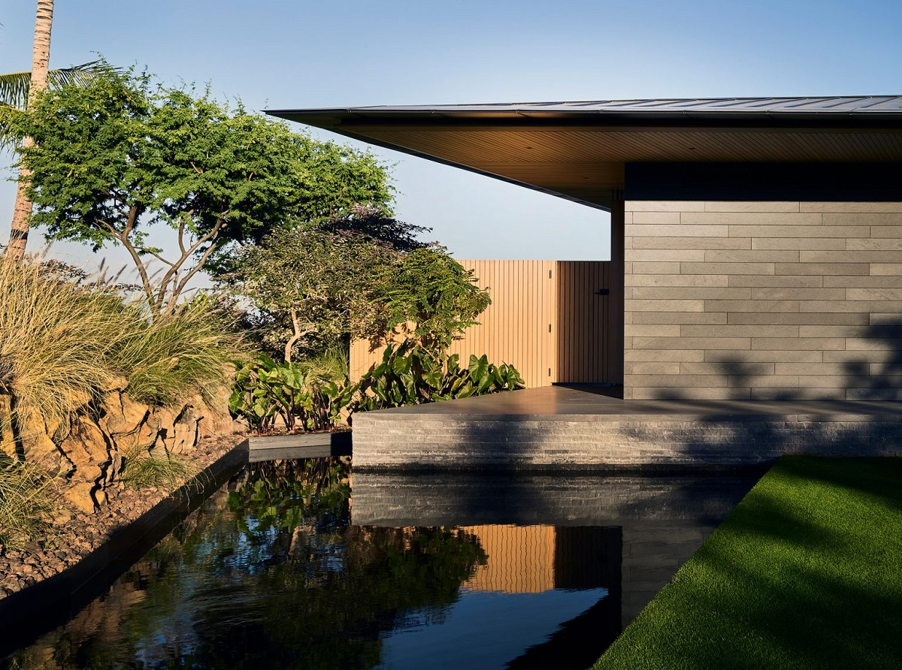
Đá bazan được sử dụng làm cốt liệu cho bê tông với độ chịu lực cao
Đá bazan là loại đá lửa có màu sẫm, được hình thành khi dung nham nguội đi nhanh chóng. Nó thường được sử dụng làm cốt liệu cho bê tông vì chi phí thấp và độ chịu lực cao. Đây cũng là vật liệu ốp lát sàn phổ biến, đặc biệt khi được đánh bóng.
Một số ứng dụng của đá bazan có thể kể đến như mặt tiền của phòng trưng bày nhỏ ở Amsterdam của Barend Koolhaas và nhà nghỉ máy ở Hawaii của Walker Warner Architects, trong đó gạch ốp bazan tương phản với hàng cây tuyết tùng. (ảnh trên).
Trong khi đó, studio của Innriinnri đã sử dụng hai phiến đá bazan từ Iceland điêu khắc để tạo ra chiếc bàn nội thất tinh tế trông giống như một chiếc ghế đẩu hoặc tác phẩm nghệ thuật. Nghệ sĩ Hàn Quốc Byung Hoon Choi cũng sáng tạo đá bazan để tạo ra các tác phẩm điêu khắc đóng vai trò là đồ nội thất ngoài trời.
Đá lửa
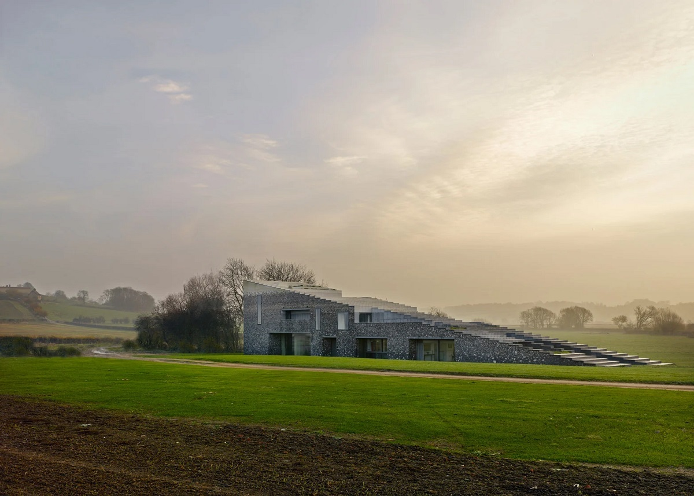
Skene Catling de la Pena đã sử dụng sự kết hợp của đá lửa để phủ lên ngôi nhà hình nêm ở Buckinghamshire
Đá lửa là loại đá trầm tích giàu silica, có cấu trúc tinh thể kín nhỏ, có độ cứng, độ sắc cao. Đây là loại vật liệu được sử dụng trong xây dựng từ thời La Mã và ít được dùng trong kiến trúc đương đại. Đá lửa có nhiều màu sắc khác nhau nhưng thường là màu đen thủy tinh với lớp vỏ trắng. Trong kiến trúc, đá lửa thường được đẽo tách để lộ mặt bóng bên trong trước khi được trát vữa.
Skene Catling de la Pena đã sử dụng sự kết hợp của đá lửa để phủ lên ngôi nhà hình nêm ở Buckinghamshire (ảnh trên) để tạo ra dải màu tinh tế trên mặt tiền.
Gneiss

Gneiss được ứng dụng trong vật liệu ốp tường
Gneiss, một loại đá phổ biến và phân bố rộng trong lớp vỏ Trái Đất, được hình thành bởi quá trình biến chất khu vực ở mức cao, bao gồm các lớp xen kẽ của khoáng chất có màu sắc khác nhau. Chúng được sử dụng để lát sàn và mặt bàn từ gam màu hồng, vàng đến xanh lục và xám đậm.
Peter Pichler đã lấy đá gneiss xám với các dải đen trắng từ Thung lũng Passeier ở Nam Tylol để tạo nên quầy bar lớn trong khách sạn Alpine ở Ý.
Chúng cũng được ứng dụng trong vật liệu ốp tường như ở văn phòng khu nghỉ mát trượt tuyết do Bernardo Beaafer Architekten ở Áo thiết kế và một trạm phát sóng radio ở Nepal của Archium.
Đá hoa cương
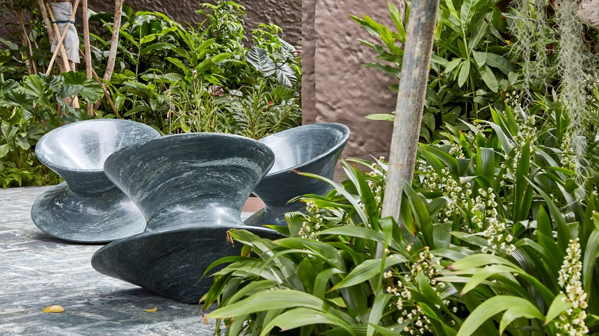
Đá hoa cương rất được ưa chuộng và phù hợp với nhiều không gian và phong cách
Đá hoa cương là cái tên không còn xa lạ trong kiến trúc và thiết kế. Nó được hình thành từ sự kết tinh chậm của magma bên dưới lớp vỏ Trái đất và được sử dụng rộng rãi từ kết cấu chịu lực đến tấm ốp, mặt bàn và đồ nội thất.
Nhờ cường độ nén cao, độ bền và độ xốp thấp, nhiều màu sắc, đá hoa cương rất được ưa chuộng và phù hợp với nhiều không gian và phong cách khác nhau.
Heatherwick Studio đã sử dụng đá granite xanh để làm bộ ba ghế Spun điêu khắc (ở trên), trong khi Snøhetta đã sử dụng nhiều loại màu xám để ốp hầu hết mọi bề mặt của cửa hàng Aesop, tạo nên một bờ biển đầy đá.
Studio kiến trúc NOARQ đã kiểm tra độ bền của vật liệu bằng cách nâng một cabin trên những khối đá granite dày trên lối vào một biệt thự bằng đá ở Bồ Đào Nha.
Đá ong
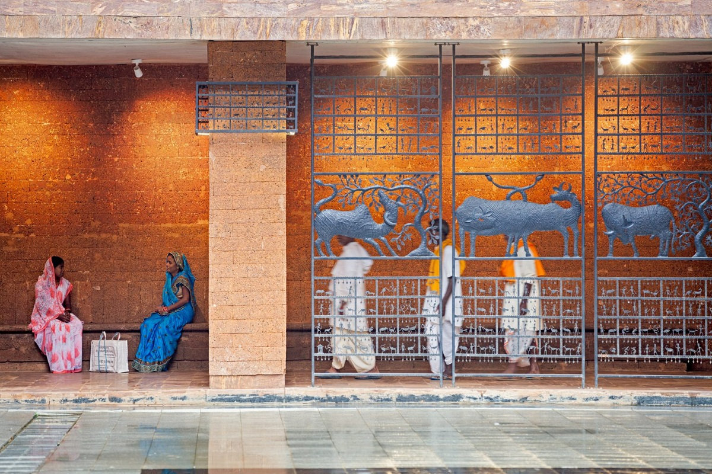
Đá ong có màu đặc trưng
Đá ong đỏ gỉ được hình thành từ quá trình rửa trôi đá và đất trong thời gian xen kẽ của nhiệt độ cao và lượng mưa lớn ở khu vực nhiệt đới. Quá trình này để lại lượng lớn oxit sắt nồng độ cao làm cho đá có màu đặc trưng
Đá ong thường được sử dụng dưới dạng gạch, phổ biến ở châu Phi và châu Á. Những viên gạch này được tạo ra bằng cách cắt đá ra khỏi mực nước ngầm khi còn ẩm và để cứng lại trong không khí.
KTS Francis Kéré đã sử dụng đá ong có nguồn gốc địa phương để xây tường của một trường học ở Burkina Faso và Studio Lotus đã sử dụng nó để tạo bệ của một tòa nhà chính phủ ở Ấn Độ (ảnh trên).
Đá vôi
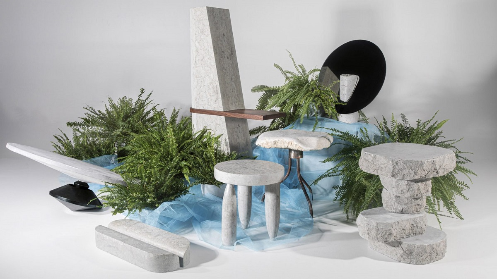
Đá vôi dễ cắt và dễ chạm khắc và có kết cấu, màu sắc đồng nhất
Có nhiều loại đá vôi khác nhau, một loại đá trầm tích có thành phần chủ yếu là canxi cacbonat. Đây được coi là vật liệu xây dựng toàn diện vì dễ cắt và dễ chạm khắc và có kết cấu, màu sắc đồng nhất.
Các loại đá vôi phổ biến bao gồm đá travertine và đá Portland, được sử dụng tại các tòa nhà ở London như Nhà thờ St paul và Cung điện Buckingham.
Công ty kiến trúc David Chipperfield Architects đã sử dụng đá vôi để ốp phần mở rộng bảo tàng Kunsthaus Zurich ở Thụy Sĩ và John Pawson đã sử dụng nó để làm lớp lót bề mặt ở cửa hàng tối giản ở Nhật Bản cho nhãn hiệu thời trang Jil Sander.
Các dự án thiết kế sử dụng đá vôi bao gồm một bộ sưu tập đồ nội thất hình khối có tên là Dig Where You Stand của các sinh viên đến từ Học viện Nghệ thuật Estonia (ảnh trên).
Đá cẩm thạch
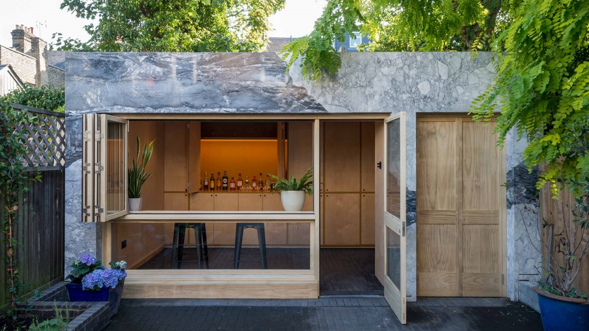
Đá cẩm thạch dễ chạm khắc và đánh bóng tốt, phù hợp với nhiều nhu cầu và mục đích thiết kế khác nhau.
Đá cẩm thạch là loại đá biến chất với các đường vân ngẫu nhiên của tinh thể canxit, được hình thành từ đá vôi đã tiếp xúc với nhiệt và áp suất, tạo nên nhiều màu sắc đa dạng. Tuy có độ cứng nhưng đá cẩm thạch lại dễ chạm khắc và đánh bóng tốt, phù hợp với nhiều nhu cầu và mục đích thiết kế khác nhau.
Phổ biến nhất vẫn là trong thiết kế nhà bếp và phòng tắm nhưng đá cẩm thạch cũng thường được dùng làm tấm ốp như trong phòng vườn của Alexander Owen Architecture ở London (ảnh trên).
Đá mã não
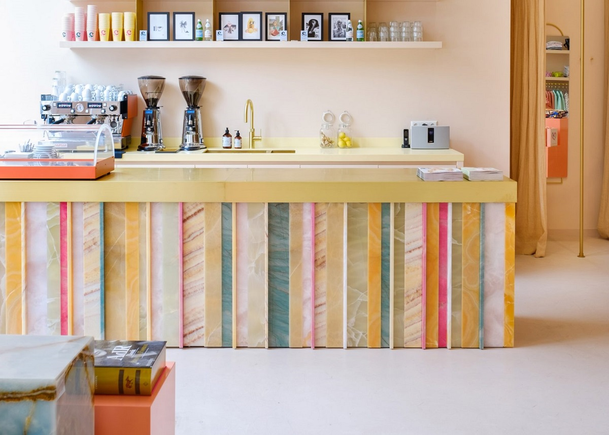
Đá mã não có lịch sử lâu đời, được sử dụng trong điêu khắc và đồ trang sức
Onyx là loại đá có cấu trúc vi hạt rất mịn, có màu phân lớp dạng đồng tâm hoặc dải với nhiều màu sắc đa dạng từ trắng sữa, phớt vàng, xanh lá cây, xanh lục… Đá mã não có lịch sử lâu đời, được sử dụng trong điêu khắc và đồ trang sức, ít thấy trong kiến trúc và thiết kế. Tuy nhiên đôi khi mã não cũng được dùng cho bề mặt và chiếu sáng.
Các thiết kế sử dụng đá mã não như lăng mộ ở Minneapolis của HGA và văn phòng kiến trúc Anne Claus Interiors sử dụng đá như lớp ốp cầu vồng cho đảo bếp (ảnh trên).
Porphyry
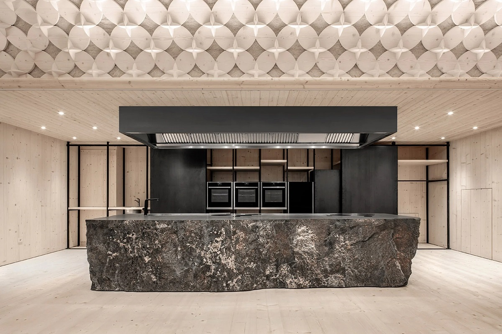
Porphyry là một loại đá lửa cứng và chịu lực, có màu từ nâu đỏ đến tím.
Porphyry là một loại đá lửa cứng và chịu lực, có màu từ nâu đỏ đến tím. Nó bao gồm các tinh thể hạt lớn được nhúng trong một lớp nền hạt mịn.
Đá porphyry đã được sử dụng trong kiến trúc và thiết kế từ thời cổ đại, mặc dù nó hiếm khi được nhìn thấy trong kiến trúc và thiết kế đương đại. Ngày nay, chúng chủ yếu được dùng làm cốt liệu trong xây dựng đường xá ở những nơi mà ô tô yêu cầu lốp xe mùa đông.
Pedevilla Architects đã sử dụng một khối porphyry làm đảo bếp cho trường dạy nấu ăn ở Nam Tyrol, trong khi kiến trúc sư Claudio Silvestrin sử dụng chúng để tạo nên các bức tường cho cửa hàng thời trang ở Milanese.
Thạch anh (quartzite)
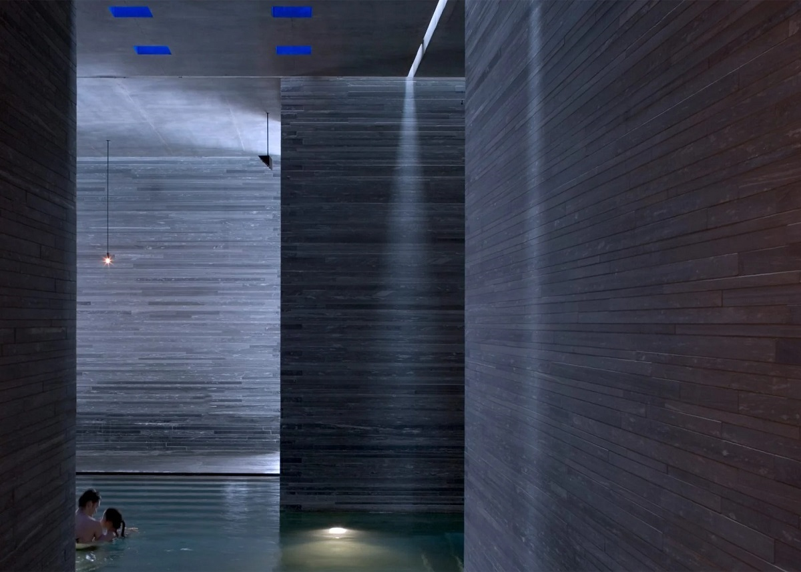
Đá thạch anh thường được tìm thấy trong các sắc thái trắng và xám.
Được hình thành từ sa thạch tiếp xúc với nhiệt và áp suất cao, quartzit là một loại đá biến chất rất cứng và bền. Nó thường được tìm thấy trong các sắc thái trắng và xám.
Quartzite là vật liệu phổ biến cho mặt bàn bếp vì nó có khả năng chống bám bẩn, nhưng cũng thường được sử dụng làm tấm ốp trang trí hoặc sàn nhà.
Ví dụ bao gồm một ngôi nhà ở Utah của Klima Architecture, spa Therme Vals của Peter Zumthor (ảnh trên) và một thư viện Paris nguyên khối của Agence Pascale Guédot.
Sa thạch (sandstone)
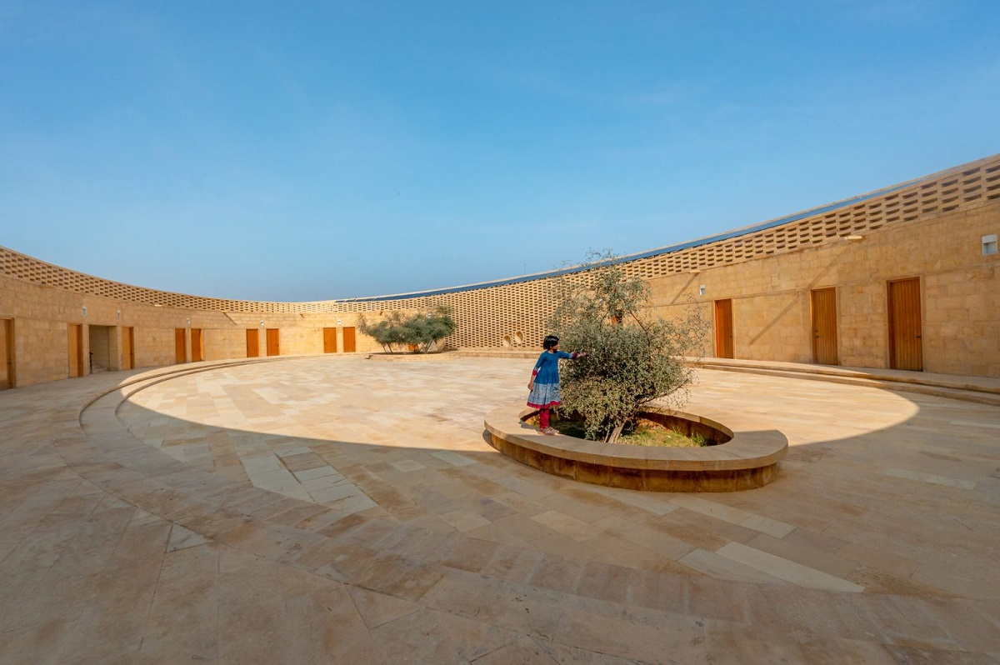
Đá sa thạch là một lựa chọn phổ biến trong kiến trúc và thiết kế
Đá sa thạch bao gồm các hạt silicat mịn bị bào mòn từ các loại đá khác, tạo nên màu đỏ ấm, vàng hoặc cam.
Được sử dụng để xây dựng từ thời tiền sử, đá sa thạch tiếp tục là một lựa chọn phổ biến trong kiến trúc và thiết kế vì độ phân bố, bền và dễ xử lý.
Các dự án sử dụng vật liệu này bao gồm phần mở rộng nhà thờ của Feilden Fowles, bảo tàng của Álvaro Siza và một trường học dành cho nữ sinh hình bầu dục ở Ấn Độ (ảnh trên) được thiết kế để hòa vào khung cảnh sa mạc.
Đá phiến sét (shale)

Đá phiến sét thường được nghiền và chế biến thành gạch, ngói và đồ gốm, hoặc nung với đá vôi để làm xi măng.
Loại đá hạt mịn màu xám này là một trong những loại đá trầm tích phổ biến nhất trên trái đất. Nó được hình thành từ sự nén chặt của phù sa và bùn thành các lớp mỏng, phân hạch. Trong kiến trúc và thiết kế, đá phiến sét thường được nghiền và chế biến thành gạch, ngói và đồ gốm, hoặc nung với đá vôi để làm xi măng.
Aketuri Architektai đã sử dụng gạch đá phiến để ốp một ngôi nhà nhọn trong rừng ở Lithuania (ảnh trên), trong khi Spaceworkers bọc đá xung quanh tầng hầm của một ngôi nhà ở Bồ Đào Nha để mang lại vẻ thẩm mỹ thô mộc và chắc chắn.
Đá phiến (slate)
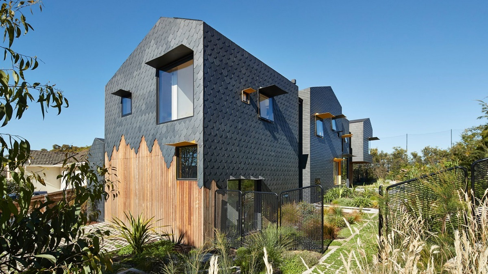
Đá phiến có độ bền cao và chịu được thời tiết và sương giá
Đá phiến (đá bảng) là một loại đá có hạt mịn sẫm màu được hình thành khi đá trầm tích, chẳng hạn như đá phiến sét, chịu áp lực cao. Gọi là đá phiến bởi chúng được tạo thành từ các lớp trầm tích mỏng, cho phép nó bị tách – hoặc riven – thành các phiến mỏng.
Đá phiến có độ bền cao và chịu được thời tiết và sương giá, làm cho nó trở thành một vật liệu phổ biến được lựa chọn để ốp, lợp và lát.
Trong các dự án nội thất, đá phiến thường được sử dụng làm gạch lát nền, lò sưởi và mặt bàn bếp. Natalie Weinmann đã chà nhám và đánh bóng đá để tạo ra một bộ sưu tập đồ nội thất hình khối.
TRIAS đã sử dụng đá slate để ốp cho ngôi nhà nhỏ nghỉ dưỡng ở thung lũng của xứ Wales, trong khi Austin Maynard Architects dùng những tấm lợp bằng đá phiến hình viên kim cương, vỏ sò và gạch để phủ lên ngôi nhà ở Melbourne (ảnh trên).
Travertine
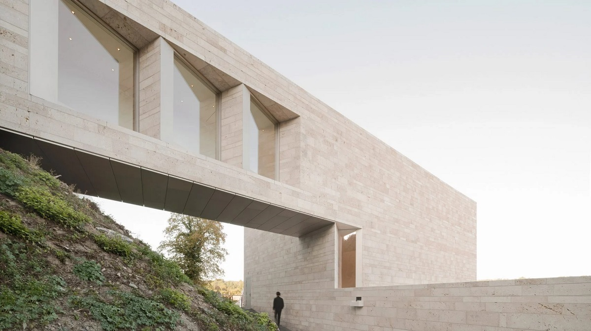
Travertine được lấy từ các suối khoáng để sử dụng làm vật liệu xây dựng trong nhiều thế kỷ
Một trong những dạng đá vôi được sử dụng phổ biến nhất là travertine, được lấy từ các suối khoáng để sử dụng làm vật liệu xây dựng trong nhiều thế kỷ. Công trình lớn nhất thế giới làm từ loại đá này là Đấu trường La Mã ở Rome.
Ngày nay, travertine chủ yếu được chế tác thành gạch ốp lát để phủ bề mặt bên trong và bên ngoài, nhưng nó cũng là vật liệu phổ biến cho đồ trang trí phòng tắm. Quá trình xử lý travertine thường bao gồm cả việc đánh bóng bề mặt.
Các dự án sử dụng travertine bao gồm mở rộng bảo tàng Đức của Bez + Kock Architekten (ảnh trên), cải tạo căn hộ ở Lithuania của 2XJ và bộ sưu tập đồ nội thất của David / Nicolas.
Biên dịch | Vũ Hương (Nguồn: Dezeen)